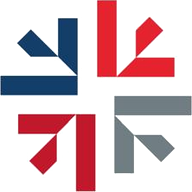

Farol Operacional
CT LOS · indicadores do dia

Farol Operacional
CT LOS · Grupo LOS
⬇ Instalar app
?
Carregando…
↗
Farol Operacional
CT LOS · Grupo LOS
Hoje
Mês
Regionais
Projeção
Meta
Indicadores operacionais diários.
Carro parado é prejuízo.